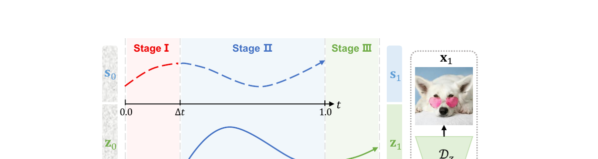
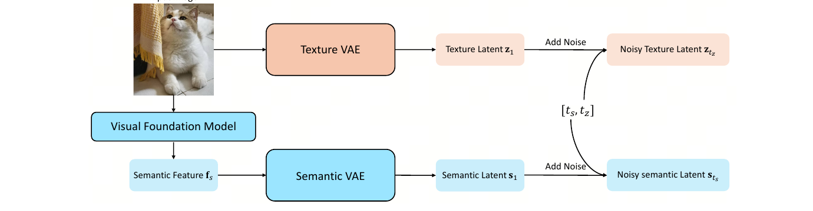
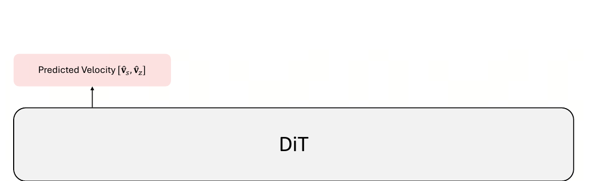
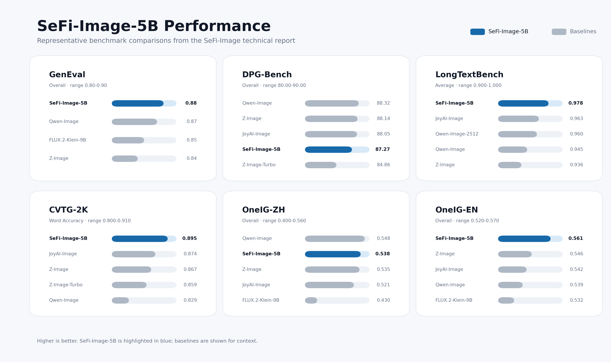
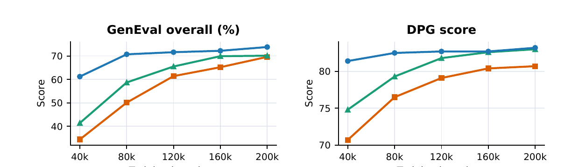
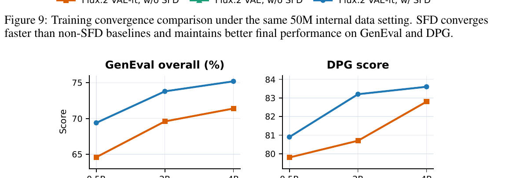

SeFi-Image: A Text-to-Image Foundation Model with Semantic-First Diffusion
assets/teaser_canvas.jpg）。覆盖照片级真实感、复杂排版长文字、中英双语文字渲染等场景。
1. 出发点 (Motivation)
训练一个文生图基础模型很烧钱。即便是号称「资源友好」的 Z-Image，也报告用了 314K H800 GPU·时[§1]。能不能更省？
学术界早有一条省钱思路：用预训练视觉编码器（DINOv2 等）的语义信息来加速扩散训练。这条线上有一堆方法——RAE / VA-VAE 重塑或对齐 latent 空间、REPA 做特征级正则、ReDi / REG 做语义-纹理联合生成、SFD 做语义-纹理异步建模。它们都在 ImageNet 256×256 类别条件生成上拿到了显著的收敛加速和更好的 FID。
但有一个尴尬的鸿沟：这些结果几乎只在「小模型（通常 <1B）+ 玩具数据集 + 类别条件」的设定下验证过[§1]。三个真正要紧的问题没人回答：
- 语义引导在更大模型上还有效吗？
- 在更高分辨率上还有效吗？
- 最关键的——它能迁移到**真正实用的「文生图」**设定（文本条件、开放域、SOTA 级别）吗？
SeFi-Image 就是来填这个坑的：它以 Semantic-First Diffusion (SFD) 为骨架，做出一个能和 Qwen-Image / Z-Image 掰手腕的 T2I 基础模型，并提供 1B / 2B / 5B 三档，系统性地研究 scaling 行为。卖点是**重建-生成权衡（reconstruction-generation trade-off）**做得好：它跑在一个高保真重建的 VAE latent 空间里（利于文字、细节、未来的编辑任务），却依然收敛飞快、最终质量很高。
一句话动机：过去「语义引导加速扩散」只在 ImageNet 上玩过；SeFi-Image 第一次把它做成了一个工业级、追平 SOTA 的文生图基础模型，而且只花了对手 ~1/5 的算力。
2. 方法 (Method)
2.1 直觉：扩散本来就是「先粗后细」，那就让语义先去噪
普通的 latent 扩散 / flow-matching 模型，把图像压成一个 latent，然后所有信息共用同一个时间步一起去噪——这隐式地强迫「语义」和「纹理」同步演化。
但图像生成天然是 coarse-to-fine（先粗后细）：全局语义和物体布局通常在高频纹理细节之前就确定了。SFD 的核心 idea 就是顺着这个规律——把语义和纹理沿扩散时间轴拆开，让语义比纹理早一点被解出来，于是纹理生成永远是在一个「更干净的语义锚点」条件下进行的。

2.2 复合 latent：语义一路、纹理一路
给一张图 \(x\)，SFD 从两个来源构造一个复合 latent：
- 纹理 latent \(z_1 = E_z(x)\)：用一个（微调过的 FLUX.2）纹理 VAE 直接编码图像，保留低层重建细节。
- 语义 latent \(s_1 = E_s(f_s)\)，其中 \(f_s = \Phi(x)\)：先用一个冻结的视觉基础模型 \(\Phi\)（这里是 DINOv2-Large）抽 patch 级语义特征，再用一个 Semantic VAE \(E_s\) 把高维特征压成一个紧凑的语义 latent，编码物体身份、布局、场景结构。

按 flow matching 的线性插值路径，给两路分别加噪：
—— 翻译: s₀、z₀ 是纯高斯噪声，s₁、z₁ 是干净 latent。时间步 t=0 是纯噪声、t=1 是干净。两路各走各的插值，关键在于它们用不同的 t。
2.3 核心机关：让语义时间步「领先」纹理一个固定偏移 Δt
怎么保证「语义比纹理干净」？SFD 用一个非常简洁的采样+钳位规则给每张图分配两个时间步：
—— 翻译: 先把语义时间步 t_s 从一个「加长」的区间 [0, 1+Δt] 里采样；纹理时间步 t_z 就是它减去固定偏移 Δt 再钳到 ≥0；最后把 t_s 钳到 ≤1。结果保证 t_s ≥ t_z，即语义经历的噪声污染始终不超过纹理——也就是「语义更干净，给纹理当结构向导」。
把区间从 \([0,1]\) 加长到 \([0,1+\Delta t]\) 是为了让「偏移 Δt」在两端也不越界（这样三个阶段才能凑齐）。\(\Delta t\) 是这套机制唯一的新超参，训练时取 0.1–0.2（见后文训练表）。
2.4 双时间步 DiT 与训练目标
主干是一个 Transformer \(v_\theta(\cdot)\)，吃复合噪声 latent \([s_{t_s}, z_{t_z}]\)、两个独立时间步 \([t_s, t_z]\)、以及文本条件 \(c\)，同时预测两路的速度：
—— 翻译: 一个网络同时输出语义速度 v̂_s 和纹理速度 v̂_z；它必须「知道」两路各自处在什么噪声水平（所以要喂两个时间步）。

训练目标是两路速度预测损失的加权和（flow-matching 的 velocity 目标就是 \(v = x_1 - x_0\)）：
—— 翻译: 让网络预测的纹理速度逼近真实纹理速度 (z₁−z₀)，语义速度逼近 (s₁−s₀)；β 是语义损失的权重（训练表里取 1~2）。
此外还叠加了 REPA[11] 的表示对齐损失，把扩散隐藏态对齐到预训练视觉编码器的表示。最终目标是：
—— 翻译: 主损失（双路速度预测）+ λ 倍的 REPA 对齐损失。注意 REPA 对齐的目标特征 y*，恰好就是喂给 Semantic VAE 的那个语义特征 f_s——语义信号在这里被「用了两遍」。
代码：双时间步嵌入
SFD 对 FLUX.2 DiT 最直接的改造，就是把单一时间步嵌入换成双时间步嵌入——语义、纹理各过一个独立的 TimestepEmbedding，再 concat。这正是 Eq. (5) 里「网络要同时知道两个 t」在代码里的样子：
repo/sefi/modeling/flux2_sefi_transformer.py:L24-L56 — 双时间步嵌入：concat([emb_sem, emb_tex])
class SEFIDualTimestepEmbeddings(nn.Module):
"""SEFI dual timestep embeddings: concat([emb_sem, emb_tex])."""
def __init__(self, in_channels: int, embedding_dim: int, bias: bool = False):
super().__init__()
half_dim = embedding_dim // 2
self.time_proj = Timesteps(
num_channels=int(in_channels), flip_sin_to_cos=True, downscale_freq_shift=0,
)
self.semantic_embedder = TimestepEmbedding( # 语义专用
in_channels=int(in_channels), time_embed_dim=half_dim, sample_proj_bias=bias,
)
self.texture_embedder = TimestepEmbedding( # 纹理专用
in_channels=int(in_channels), time_embed_dim=half_dim, sample_proj_bias=bias,
)
def forward(self, timestep_sem: Tensor, timestep_tex: Tensor) -> Tensor:
sem_proj = self.time_proj(timestep_sem)
tex_proj = self.time_proj(timestep_tex)
sem_emb = self.semantic_embedder(sem_proj.to(timestep_sem.dtype))
tex_emb = self.texture_embedder(tex_proj.to(timestep_tex.dtype))
return torch.cat([sem_emb, tex_emb], dim=-1) # 两路嵌入拼起来注入 DiT
值得一提的是，FLUX.2 原本的 time_guidance_embed 被直接换成了 nn.Identity()（flux2_sefi_transformer.py:L71）——SFD「自己显式管理语义/纹理两个时间步，不再复用 guidance 那一套」。
2.5 推理：三阶段异步去噪（论文用二值 mask，代码用 sigma 钳位）
推理时 SFD 用一个三阶段异步去噪表（对应 Fig. 2）。论文用两个二值 mask \(M_s, M_z\) 来形式化「哪一路在当前阶段更新」：
—— 翻译: Stage I 只更新语义（M_s=1, M_z=0）；Stage II 两路都更新；Stage III 语义冻结、只更新纹理。被 mask 掉的那路速度乘 0，即 v̂ = [M_s⊙v̂_s, M_z⊙v̂_z]。
一个关键细节：SFD 不增加推理步数。它虽然把去噪区间延长了 Δt，但同时按比例拉大每步间隔，总步数不变；所以三阶段是「免费」的。最后只解码完全去噪的纹理 latent \(z_1\) 出图。
⚠️ 论文-代码差异（等价但更巧）：仓库
runner.py的实现里根本没有显式的二值 mask 张量。它用「sigma 钳位让步长 dt 自动变 0」达到同样效果——见 §4.1。这是本文交叉精读最值得记的一处。
3. 结论 (Key findings)
3.1 算力账：5B 只用 125K A800 GPU·时
最硬的卖点：5B 模型只用了 125K A800 GPU·时，约为 Z-Image（314K H800·时）训练算力的 10–20%[§Abstract/§1]。换来的是在一票基准上追平甚至反超 Qwen-Image / Z-Image。
3.2 多基准全面对标（数字说话）
| 基准 | SeFi-5B | SeFi-2B | SeFi-1B | Qwen-Image | Z-Image | FLUX.2-Klein-9B |
|---|---|---|---|---|---|---|
| GenEval Overall↑ | 0.88 | 0.87 | 0.87 | 0.87 | 0.84 | 0.85 |
| DPG-Bench Overall↑ | 87.27 | 87.31 | 87.17 | 88.32 | 88.14 | — |
| LongTextBench Avg↑ | 0.978 | 0.847 | 0.855 | 0.945 | 0.936 | 0.541 |
| CVTG-2K Word Acc↑ | 0.895 | 0.773 | 0.718 | 0.829 | 0.867 | — |
| OneIG-EN Overall↑ | 0.5606 | 0.5367 | 0.5247 | 0.5390 | 0.5460 | 0.5324 |
| OneIG-ZH Overall↑ | 0.5379 | 0.4979 | 0.5095 | 0.5480 | 0.5350 | 0.4302 |
几个要点：
- GenEval：连最小的 1B 模型都追平了大得多的 Qwen-Image（都是 0.87），且在 Position（空间理解）和 Colors 上尤其能打；主要差距在 Counting（计数）。
- 长文字 / 文字渲染：5B 在 LongTextBench（0.978，全场最高）和 CVTG-2K 字符级渲染（Word Acc 0.895）上都是第一。论文归因：语义分支提供了强结构骨架，帮模型组织信息密集的长 prompt。
- scaling 不总是单调：1B/2B 在长文字上明显掉档（0.85 左右），说明长文本理解很吃模型容量；而 2B 在英文上比 1B 强、中文却更弱——非单调，疑似数据分布偏差/训练方差，而非纯容量驱动。
- DPG-Bench 是少数 SeFi 略逊的基准（5B 的 87.27 vs Qwen 88.32），差距 ~1 分。

assets/performance_overview.png）：在显著更低的训练算力下，SeFi-Image 在多个评测轴上达到竞争性或 SOTA 水平。
3.3 为什么省：重建-生成权衡 + 收敛加速 + 更好的 scaling
论文 §4 用受控消融论证了 SFD「为什么能又快又好」：
(a) 更好的 VAE 重建。 因为纹理生成总是被「更干净的语义 latent」引导，纹理建模负担大幅降低，于是可以放心地把纹理 VAE 往重建质量方向激进微调，而不太担心伤害收敛。微调后的 FLUX.2 VAE 在 Kodak 上把 PSNR 从 33.18 → 36.40；在文字密集的 OmniDoc-TokenBench 上 PSNR/LPIPS/FID/NED 全面领先（无需任何文字专项训练）。
| VAE (Kodak) | PSNR↑ | SSIM↑ | LPIPS↓ |
|---|---|---|---|
| FLUX.1 | 32.37 | 0.9063 | 0.0554 |
| FLUX.2 | 33.18 | 0.9194 | 0.0442 |
| FLUX.2-finetuned (ours) | 36.40 | 0.9565 | 0.0235 |
(b) 收敛更快。 在 50M 样本、256² 的受控对比里，「微调 VAE + SFD」相比「微调 VAE 无 SFD」「原版 VAE 无 SFD」两个基线，在 GenEval/DPG 上从头到尾保持领先、收敛明显更快（Fig. 6）。
(c) scaling 更好。 在 0.5B / 2B / 4B 三档上，SFD 的优势全程保持；带 SFD 的 2B 甚至大幅超过不带 SFD 的 4B（Fig. 7）——语义先行显著提升了参数效率。


4. 实现细节 (Implementation notes)
以下都对到仓库
jmliu206/SeFi-Image的具体代码行。这是「论文之外」最有信息量的部分。
4.1 三阶段 mask 在代码里其实是「sigma 钳位让 dt=0」
这是最值得记的一处实现细节。论文 Eq. (9)(10) 用二值 mask \(M_s,M_z\) 控制「哪一路更新」，但 runner.py 的去噪循环里没有任何 mask 张量。它的做法是：构造一条「加长版」的语义进度表 u_sem_raw（终点是 \(1+\Delta t\)），纹理进度就是 u_sem_raw - Δt 再钳到 \([0,1]\)；语义进度本身钳到 \(\le 1\)：
repo/sefi/runner.py:L680-L694 — 三阶段调度：用钳位从单条语义进度表派生双时间步
for step in range(num_inference_steps):
u_sem_raw_cur = torch.full((batch_size,), float(u_sem_raw_schedule[step].item()), device=self.device)
u_sem_raw_next = torch.full((batch_size,), float(u_sem_raw_schedule[step + 1].item()), device=self.device)
# 纹理时间步 = 语义时间步 - Δt，再钳到 [0,1]；语义时间步钳到 ≤1
u_tex_cur = torch.clamp(u_sem_raw_cur - self.delta_t, min=0.0, max=1.0)
u_sem_cur = torch.clamp(u_sem_raw_cur, max=1.0)
u_tex_next = torch.clamp(u_sem_raw_next - self.delta_t, min=0.0, max=1.0)
u_sem_next = torch.clamp(u_sem_raw_next, max=1.0)
精彩之处在 Euler 更新这一步——每路的步长是 dt = sigma_next - sigma_cur：
repo/sefi/runner.py:L774-L787 — 两路各自用自己的 dt 做 Euler 更新；钳位让被「冻结」那路的 dt 自动为 0
vel_sem = velocity[:, : self.semantic_channels]
vel_tex = velocity[:, self.semantic_channels :]
lat_sem = latents[:, : self.semantic_channels]
lat_tex = latents[:, self.semantic_channels :]
dt_sem = sigmas_sem_next - sigmas_sem_cur # Stage I：语义还没到 Δt，纹理被钳在 0 → dt_tex=0
dt_tex = sigmas_tex_next - sigmas_tex_cur # Stage III：语义已钳在 1 → dt_sem=0
lat_sem = lat_sem + dt_sem * vel_sem
lat_tex = lat_tex + dt_tex * vel_tex
latents = torch.cat([lat_sem, lat_tex], dim=1)
为什么这和二值 mask 等价：Stage I 里纹理时间步被 clamp(..., min=0) 钉死在 0，所以连续两步的 sigma_tex 相等、dt_tex = 0，纹理 latent 原地不动——等价于 \(M_z=0\)。Stage III 里语义时间步被 clamp(..., max=1) 钉死在 1，dt_sem=0，语义冻结——等价于 \(M_s=0\)。论文写 mask 是为了讲清楚语义；代码用钳位是因为它更省、且天然兼容变步长。 这是「论文形式化 ≠ 代码实现，但数学等价」的典型案例。
4.2 复合 latent 的通道布局：[语义 | 纹理] 沿 channel 维拼接
latents 张量就是 torch.cat([lat_sem, lat_tex], dim=1)，前 semantic_channels 个通道是语义、其余是纹理。出图时只取后半段纹理通道解码（runner.py:L789）。纹理通道数的推导也有个易错点——FLUX 系 VAE 的 latent 会做 2×2 packing，所以纹理通道是 VAE latent 通道的 4 倍：
repo/sefi/modeling/texture_latent_codec.py:L28-L29 — 纹理通道 = VAE latent 通道 × 4（2×2 patch packing）
self.latent_channels = int(latent_channels)
self.texture_channels = int(self.latent_channels * 4)
4.3 网络入口：时间步在喂进 DiT 前先 ÷1000 再 ×1000
_predict_velocity 把两个时间步都除以 1000 传给 transformer，transformer 内部又乘回 1000（flux2_sefi_transformer.py:L170）——这是为了和 FLUX.2 原始 forward 的数值约定对齐，纯工程兼容性细节，不影响语义：
repo/sefi/runner.py:L588-L595 — 双时间步进入 DiT 前的归一化约定
pred = transformer(
hidden_states=packed_latents,
timestep_sem=timesteps_sem / 1000, # 语义时间步
timestep_tex=timesteps_tex / 1000, # 纹理时间步
encoder_hidden_states=encoder_hidden_states,
txt_ids=txt_ids, img_ids=img_ids,
)
4.4 推理默认 Δt = 训练上界，且可被覆盖
_configure_delta_t 要求 config 里必须给 delta_t_min / delta_t_max；推理默认取 delta_t_max，但允许命令行 --delta-t 覆盖（越界会告警但不报错）。配合训练表里 256px 阶段 Δt=0.2、768px 之后 Δt=0.1，说明 Δt 是一个随分辨率/阶段调整的超参，不是定死的常数。
4.5 架构与训练栈（散点）
- 文本编码器：Qwen3-VL（
qwen3vl_text_encoder.py）——和近期 Boogu-Image、qwen-image-2-2026 一样走「多模态 LLM 当文本条件」的路线。 - Texture VAE：微调版 FLUX.2 VAE，32 latent 通道；微调目标 \(\mathcal{L} = \mathcal{L}_{\text{MSE}} + 0.1\,\mathcal{L}_{\text{LPIPS}} + 10^{-12}\,\mathcal{L}_{\text{KL}}\)，几乎无 KL、不加 GAN loss（已接近无损压缩），8×A800 训 12 小时。
- Semantic VAE：Transformer 结构，把 DINOv2-Large 的 patch 特征压成紧凑语义 latent；用「重建 + 余弦相似」损失独立预训练，扩散训练时冻结 \(\Phi\)、只优化 \(E_s,D_s\)。
- 训练课程：分辨率 curriculum 256→512→768→1024，450M 预训练 + 9M continual + 650K SFT，β 从 2 降到 1。
- Turbo 蒸馏：用 DMD2 蒸到 4 步，关键是蒸馏时保持同样的 Δt=0.1 语义领先规则，否则 4 步会抹掉「语义先行」的偏移结构。
- RL 后训练：用 DiffusionNFT，把目标改成复合 latent
concat(z_semantic, z_texture)，异步去噪表保持不变；每轮对 K=400 组 prompt 各生成 M=12 张共 4800 张，按 reward 方差过滤掉信号弱的组，再 top-bottom 选正负样本。
5. 批判性总结 (Critical assessment)
优点 (Strengths)
- 把一个「ImageNet 上的学术 trick」真正做成了工业级 T2I 基础模型——这是论文最大的贡献，回答了「语义引导能否 scale 到实用 T2I」这个开放问题，且给了肯定答案。
- 算力效率有说服力：125K A800·时做到追平 SOTA，并用三组受控消融（重建 / 收敛 / scaling）把「为什么省」讲清楚了，不是只甩一个总数字。
- 重建-生成权衡的论证很漂亮：「因为纹理被干净语义引导、所以能放心把 VAE 推向高保真重建」——这条因果链既解释了为什么文字渲染（CVTG/LongText）特别强，也指明了它对未来图像编辑任务的潜在价值。
- 代码开源且实现干净：双时间步嵌入、三阶段钳位调度都能在百行级代码里看明白，复现门槛低。1B 小模型就有强指令跟随，落地友好。
局限 / 开放问题 (Limitations / open questions)
- 规模仍然不够（作者自己列为首要局限）：受 A800-40G 硬件所限，最大只到 5B；而文字渲染、精细布局、细粒度跟随都强依赖模型容量——1B/2B 在 LongTextBench 上的大幅掉档就是证据。scaling 趋势预示更大模型还有空间，但论文没验证。
- DPG-Bench 上反而略逊 Qwen-Image / Z-Image（~1 分），说明「语义先行」并非在所有维度都占优；它更擅长结构/文字，不一定擅长某些密集属性绑定。
- 数据偏自然图像：审美、艺术、设计、UI、信息图类数据稀疏，导致这些风格上的质量天花板和多样性受限；尚未上更复杂的 agent 式合成数据管线。
- 多模态/编辑只是「画饼」：论文一直强调重建-生成权衡对编辑的价值，但完全没有在编辑任务上验证——而编辑恰恰是对重建保真和内容一致性要求最苛刻的场景。这块是「声称的优势」而非「证明的优势」。
- Δt 缺乏系统消融：Δt 是整套机制唯一的新超参，训练表里给了几个经验值，但没有「Δt 取多少最优、对不同任务的敏感度」的系统研究。
- 非单调 scaling 现象未解释：2B 英文升、中文降这种非单调，作者只猜测是「数据分布偏差或训练方差」，没有进一步定位，影响对小模型的可信度判断。
何时用 / 不用 (When to use / not use)
- 适合：算力受限但想要 SOTA 级 T2I；强文字渲染 / 长 prompt / 中英双语场景；想要一个高保真 VAE latent 空间（为后续编辑/一致性留余地）；想研究语义引导的 scaling。
- 暂不适合：需要 >5B 容量才能解的极端长文字 / 复杂排版；信息图 / 设计 / UI 风格；当前就要做图像编辑（论文未验证，需自行承担风险）。
延伸阅读 (Further reading)
- 同期对标：qwen-image-2-2026、boogu-image-2026（都走「MLLM 文本条件 + DiT + DMD 蒸馏」路线，可横向对比）。
- 方法源头：SFD（Semantic-First Diffusion，论文引用 [15]）、REPA（特征对齐，[11]）、DINOv2（语义编码器，[29]）。
- 后训练：DMD2（少步蒸馏）、DiffusionNFT（扩散 RL）。
讨论 / Comments
评论托管在本仓库的 GitHub Discussions, 需 GitHub 账号。